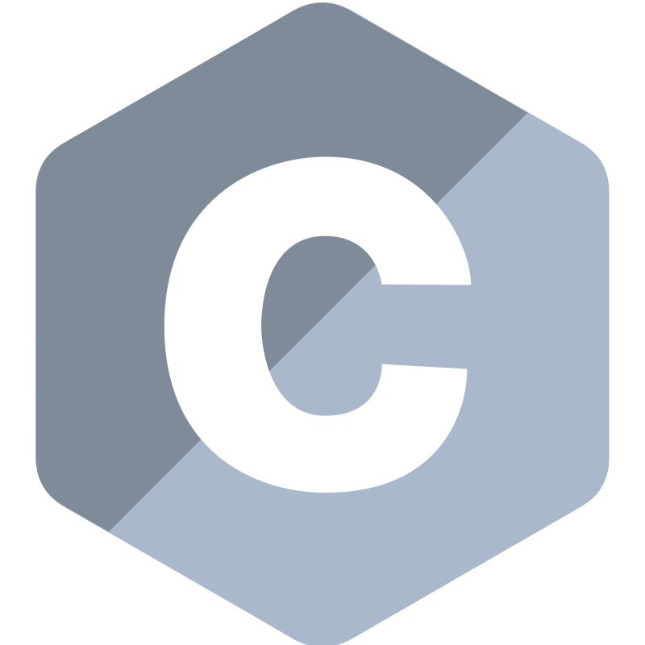

Ignacio Tomas Alvarez Gonzalez
Ingeniero de Software
Programación
Orientada a objeto
Estructuras de datos
Bases de datos
Modelo Relacional
Administración
Redes
Topologías
Protocolos
Orientada a objeto
Estructuras de datos
Modelo Relacional
Administración
Topologías
Protocolos
La sólida formación en ciencias básicas, software, hardware y comunicaciones, complementada con temas de economía y gestión de empresas, en un ámbito de trabajo en equipo, permite generar profesionales creativos e innovadores, capaces de liderar las nuevas soluciones que la sociedad y el país necesitan.
Los más destacable que aprendí en la carrera es: Programación estructurada y orientada a objeto, lógica y estructuras de datos, el modelo relacional y la normalización para bases de datos, la arquitectura de computadoras y las topologías y protocolos de las redes de distintas dimensiones.
Aquí aprendí los siguientes lenguajes:



En el año 2021 hasta principios de 2022, trabajé como desarrollador web en el Ente Tucumán Turismo, donde creé un sitio web informativo dinámico y un sistema de gestión de contenido. Durante este periodo, apliqué conceptos relacionados con la arquitectura cliente-servidor, utilizando el patrón de diseño Modelo-Vista-Controlador (MVC). Además, me encargué de desarrollar tanto el frontend como el backend de la página web y del sistema mencionados.
Ademas como se puede ver use mi conocimiento para confeccionar este Portfolio y otros proyectos
Hice uso de los siguientes lenguajes y frameworks:


En el año 2018 se dicto un curso en mi facultad el cual me dio las bases de como desarrollar un videojuegos.
Lo más destacable del curso fue: La confección de documentación GDD y GCD, un vistazo general por las metodologías de desarrollo, las características del motor Unity y la confección de proyectos al finalizar cada unidad
El lenguaje que utilizamos fue:


Ya que durante mi carrera universitaria tuve que desarrollar proyectos para determinadas materias, eso me llevo a no quedarme con lo que me enseñaban sino buscar nuevos lenguajes, herramientas y frameworks.
A fin de complementar también ese conocimiento he comenzado proyectos personales, algunos un poco ambiciosos al principio y que (espero) momentáneamente están suspendidos y otros más pequeños como desafíos personales a completar
Algunas cosas que sigo aprendiendo de manera autodidacta son:


Pagina web la cual trae cierta información de una base de datos relacional y un sistema de carga de información (CRUD) alojado en un servidor propio de la institución, con gestión de usuarios, permitiendo al personal la actualización de la misma en distintos grados de responsabilidad. Deje de formar parte en Marzo de 2022 por lo que toda modificación posterior no me corresponde.
Web institucional dinámica, actualizada mediante sistema interno
Aplicación usada para exposiciones, desarrollada con Unity debido al poco tiempo de desarrollo que se disponía y la característica de ser multiplataforma. Consta de 6 botones los cuales pueden desactivarse y llevan a un video particular del tema a exponer. Los videos están recortados por temas de almacenamiento
Aplicación multiplataforma desarrollada en tiempo reducido
Basándome en la función del proyecto realizado con Unity anteriormente, la idea es replicarlo y adaptarlo de forma que sea una Aplicación Web Progresiva, optimizando el espacio y no desaprovechando un motor de videojuegos para hacer una botonera
Evolución de la aplicación de exposiciones a PWA
Una de las primeras experiencias reales. La materia Ingeniería de software nos propone buscar un cliente real y realizar la documentación en formato UML para él.
Documentación UML confeccionada para un cliente en el marco de una materia.

En el marco del curso "Desarrollo de Aplicaciones mobiles" de Argentina Programa 4.0, para aprobarlo realice esta aplicación de comparación de cadenas, un ejercicio simple que me llevo un día pero donde pude aplicar todo lo aprendido en el curso.
Aplicación realizada aplicando los conocimientos del curso.
 ignaciotalgz
ignaciotalgz
 ignaciotalgz@gmail.com
ignaciotalgz@gmail.com
 ignaciotalgz
ignaciotalgz